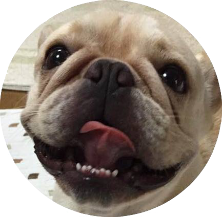

こんにちは、Katz Kawai です
Web 開発を楽しみながら、モダンなフロントエンドや PWA、データビジュアライゼーションを試している個人サイトです。
アイコンは、2025年の暮れに12歳で旅立った愛犬・パピちゃん。心から愛したワンコを偲び、追悼の想いを込めて使っています。
作品
GitHub Pages などで公開している制作物です（64件）。
免責事項: 本サイトおよび下記の作品一覧に掲載しているコンテンツは、サイト構築の練習およびサンプルとして作成したものであり、内容の正確性を保証するものではありません。制作の過程で生成AIを活用しているため、実在しない情報や架空の内容（生成AIによるフィクション）が含まれている場合があります。
浜名湖うなぎ処 湖月（DeepSeek V4 Flash）
浜名湖畔に構える架空のうなぎ料理専門店「湖月」の店舗サイト（サンプル）。トップ・浜名湖うなぎとは・メニュー・養殖のこだわり・アクセス・ご予約フォームの6ページ構成で、汽水湖の解説や養殖発祥の歴史タイムラインも収録。深い藍・金色・朱色の和モダンパレットと自作SVGイラスト4点で表現。DeepSeek Harness（DeepSeek V4 Flash）で作成。
最終更新: 2026-08-14 サイト浜名湖うなぎ非公式紹介ガイド（Gemini 3.7 Flash）
うなぎ養殖発祥の地・浜名湖のうなぎ文化と120有余年の伝統を解説する非公式紹介サイト。明治33年からの養鰻史タイムライン、美味しさ4つの秘密、関東風と関西風のインタラクティブ比較タブ、おすすめ食べ方診断、全4問の浜名湖うなぎ検定クイズを搭載。朱色・黄金色・深藍を基調とした和モダンデザイン。Antigravity（Gemini 3.7 Flash）で作成。
最終更新: 2026-08-14 サイト浜名湖うなぎ紹介サイト（Antigravity）
浜名湖うなぎの100年を超える歴史と伝統を紹介するWebサイト。関東風と関西風の焼き方の比較切り替え、ひつまぶしの食べ方ガイド、エリア別の名店ガイド、3つの質問で最適な料理を提案する「うなぎ診断」を搭載。漆黒・深朱・金箔色を基調とした和風ラグジュアリーデザイン。Antigravity で作成。
最終更新: 2026-08-14 アプリ学歴と生涯賃金の見える化
労働政策研究・研修機構（JILPT）「ユースフル労働統計2025」をもとに、日本の学歴6区分（中学卒〜大学院卒）× 男女別の生涯賃金を Chart.js で可視化した静的ページ。退職金・定年後就労を含む総額、企業規模や働き方による違い、2020〜2024年の推移を掲載し、性別×学歴×企業規模を選んで目安を表示する簡易シミュレーターも搭載。
最終更新: 2026-08-12 サンプルChart.js データ視覚化チュートリアル
世界銀行オープンデータ API を Chart.js で可視化するサンプル集。折れ線・棒・ドーナツ・散布図の4種類を収録し、JS ファイル先頭の CONFIG を書き換えるだけで指標・国・年を入れ替えられるテンプレート構成。ビルド不要で動作。
最終更新: 2026-08-11 アプリ世界の政府債務残高の可視化（Kimi）
IMF 世界経済見通し（WEO）のデータをもとに、世界184か国の一般政府総債務残高と対GDP比を Chart.js でインタラクティブに可視化した静的ページ。名目GDPと債務GDP比から米ドル建て残高を概算し、生データを CSV でも公開。Kimi K3 で作成。
最終更新: 2026-08-11 アプリ世界の合計特殊出生率の可視化（Kimi）
世界銀行（World Bank Open Data）のデータをもとに、世界の合計特殊出生率（TFR）の長期推移（1960〜2024年）・主要8か国の比較・地域別/所得グループ別の格差・上位/下位10か国を Chart.js で可視化した静的ページ。人口置換水準や人口転換など人口学的な解説も掲載し、生データを CSV でも公開。Kimi K3 で作成。
最終更新: 2026-08-11 サンプルデータビジュアライゼーション学習サンプル（Kimi）
公開データ（World Bank Open Data・Our World in Data・e-Stat）の入手方法チュートリアルと、標準ライブラリのみで動くデータ取得スクリプトを収録した学習用リポジトリ。取得した一人当たりGDPや平均寿命の推移を Chart.js で可視化したデモページも公開。Kimi K3 で作成。
最終更新: 2026-08-10 アプリ日本の国債残高の推移
日本の普通国債残高（昭和40年度〜令和8年度見込み）と対GDP比の推移を、依存ライブラリなしの静的HTML + SVG でグラフ化したページ。2007年度以降は建設国債・特例国債・復興債などの内訳も表示し、財務省の公表資料に基づくデータを CSV でも公開。Claude Code で作成。
最終更新: 2026-08-09 アプリ日米ビッグマック指数の推移（Kimi）
The Economist のビッグマック指数データをもとに、日米のビッグマック価格（2000〜2026年）と円の割高・割安度の推移を Chart.js で可視化した静的ページ。生の指数と GDP 調整後の比較、暗示的購買力平価と実際の為替レートの対比、指数の仕組みの解説も掲載。Kimi K3 で生成。
最終更新: 2026-08-08 アプリドル/円為替レートの長期推移（Kimi）
IMF 国際金融統計（IFS）のドル/円為替レート月次データ（1957年1月〜2026年6月・834件）を Chart.js の折れ線グラフで可視化したオープンデータページ。対数軸切り替えや直近50年/30年/10年の期間絞り込みに対応し、CSV・JSON 形式の生データも公開。Kimi K3 で生成。
最終更新: 2026-08-08 アプリ世界の消費税率一覧（Kimi）
世界207か国・地域の消費税（VAT / GST / 売上税）の標準税率を比較する静的ページ。上位30か国＋日本の棒グラフ、税率分布ヒストグラム、地域別平均に加え、検索・ソート可能な全データ一覧と消費税減税の事例解説を掲載。Kimi 3.0（Kimi Code CLI）で生成。
最終更新: 2026-08-07 サンプル日本のGNP（GNI）の推移（Muse）
世界銀行 WDI データをもとに、日本の GNP（国民総所得・GNI）の推移（1960–2024年・名目値）を円建て・ドル建ての2軸グラフで可視化。uv と PEP 723 により単一スクリプトから再現可能。PNG・PDF の出力に対応。Meta Muse で生成。
最終更新: 2026-08-06 アプリ日本の実質賃金35年間の停滞（OECD比較）
OECD「Average annual wages」データをもとに、日本を含む主要8か国の実質賃金の推移（1990–2025年）を比較する調査ノート。日本の35年間の停滞をインタラクティブな折れ線グラフで可視化し、FTE 調整や構成効果など統計上の注意点も解説。PNG・CSV のダウンロードに対応。
最終更新: 2026-08-06 サイト浜名湖うなぎ紹介サイト（Qwen3.8 Max）
静岡県・浜名湖の名産「浜名湖うなぎ」を紹介する静的サイト。養殖の歴史・品質・味わい方・産地情報を HTML / CSS のみで構築。Qwen3.8 Max で生成。
最終更新: 2026-08-04 サイト浜名湖うなぎ観光情報サイト（DeepSeek）
静岡県浜名湖のうなぎをテーマにした観光情報デモサイト。養殖の歴史・蒲焼の文化・名店紹介の3ページ構成を静的 HTML + CSS で構築。opencode（DeepSeek V4 Flash）で生成。
最終更新: 2026-08-02 サンプル日本のGNP（GNI）の推移（Kimi）
世界銀行 World Development Indicators に基づき、日本の GNP（国民総所得・GNI）の推移（1967–2025年）をグラフと表で可視化。ドル建て（当年価格）と円建て（名目・実質）を掲載し、CSV のダウンロードにも対応。
最終更新: 2026-08-01 アプリ日本語音声合成デモ（sarashina2.2-tts）
SB Intuitions の sarashina2.2-tts によるゼロショット日本語/英語音声合成の Gradio デモ。参照音声とその書き起こしを与えると、その声色で任意のテキストを読み上げる。ZeroGPU 上で動作し、Hugging Face Spaces で公開。
最終更新: 2026-05-02 アプリ日本語文章推敲 AI（Qwen2.5）
自分の書いた日本語文章を「ビジネス」「日常」の2つの文体に応じて推敲する Gradio アプリ。Qwen2.5-7B-Instruct を ZeroGPU 上で動かし、Hugging Face Spaces で公開。MCP サーバーとしても利用可能。
最終更新: 2026-07-21 アプリ人手不足ヒートマップ（Kimi）
厚生労働省「一般職業紹介状況」の職業別有効求人倍率をもとに、日本でどの職業が人手不足かをヒートマップで可視化。職業大分類13区分と専門・技術系12区分を年度・月次で切り替えて表示。
最終更新: 2026-07-21 アプリ日本経済ダッシュボード（Kimi）
World Bank「World Development Indicators」に基づく日本の主要経済指標ダッシュボード。GDP・インフレ率・失業率・為替レートなどを KPI カードと7つのグラフで表示（1990–2025年）。
最終更新: 2026-07-20 アプリ日本株ダッシュボード（Kimi）
日本株の3ヶ月パフォーマンスを期初終値=100で正規化して比較するダッシュボード。凡例クリックで銘柄の表示/非表示を切り替え可能。データは Yahoo Finance より取得。
最終更新: 2026-07-31 スライド名古屋観光ガイド スライド（Kimi）
名古屋城・熱田神宮・大須・名古屋めしなどを写真とともに紹介する Reveal.js スライド。
最終更新: 2026-07-17 サイト浜名湖うなぎ紹介サイト（Kimi K3）
浜名湖うなぎの歴史・美味しさの秘密・味わい方・アクセスを紹介する静的サイト。
最終更新: 2026-07-17 サイトうなぎ処 湖月（Kimi K3）
浜名湖うなぎの架空店舗「湖月」の店舗サイト。お品書き・アクセス・予約フォームを備えた和モダンな1ページ構成。
最終更新: 2026-07-17 サンプルそば・うどん勢力図
全国のそば屋・うどん屋の店舗数を都道府県別に塗り分けたインタラクティブ日本地図。勢力図と密度の3表示モード、全国ランキング、データの集め方の解説付き。
最終更新: 2026-07-12 サイト浜名湖鰻 — 湖と炭火の記録
浜名湖うなぎの成り立ちや養鰻の歴史、白焼きと蒲焼の違いまで史実に基づいて紹介する読み物風の1ページサイト。
最終更新: 2026-07-13 サンプル浜名湖うなぎの里（Next.js / Kilo）
Next.js 16 で構築し、GitHub Actions で GitHub Pages へ自動デプロイした架空のうなぎ専門店デモサイト。
最終更新: 2026-06-29 サイト極上たこ焼き 蛸ノ灯 公式サイト
湯気の演出やトッピングのリアルタイム切り替え、注文カートを備えたネオ和風の Web アプリ。
最終更新: 2026-06-18 LP浜名湖うなぎ LP（NVIDIA）
静岡県浜名湖産うなぎの魅力を紹介するランディングページ。
最終更新: 2026-06-06 サイト浜名湖うなぎ紹介サイト（Kimi）
浜名湖の自然・歴史、うなぎの特徴・調理法・名店・アクセスを掲載した静的サイト。
最終更新: 2026-06-06 アプリシンプル電卓（Flet）
Python 製フレームワーク Flet で作ったシンプルな電卓アプリ。
最終更新: 2026-06-26 LP浜名湖うなぎ LP（Qwen3）
浜名湖うなぎを紹介するランディングページ。
最終更新: 2026-06-04 サイト浜名湖うなぎ紹介サイト（HY3）
浜名湖うなぎを紹介する静的サイト。
最終更新: 2026-06-04 LP浜名湖うなぎ 和モダン LP（OpenCode）
和モダンのシングルページ・コンセプトサイト（HTML/CSS/JS, ゼロ依存）。
最終更新: 2026-06-02 サイト浜名湖うなぎ文化サイト（Composer）
静岡・浜名湖のうなぎ文化を紹介する静的 Web サイト。
最終更新: 2026-06-02 サイトたい焼き店「浪花屋」紹介サイト
大阪・天満橋のたい焼き店「浪花屋」の静的紹介サイト。
最終更新: 2026-06-02 サイト浜名湖うなぎ 和モダンサイト（MiniMax）
浜名湖うなぎを紹介する和モダンデザインの静的サイト。
最終更新: 2026-06-01 LP浜名湖うなぎ LP（DeepSeek V4）
静岡・浜名湖うなぎの魅力を紹介するランディングページ。
最終更新: 2026-06-01 LP名古屋たい焼き 金鯱堂 LP
大須の架空たい焼き店「金鯱堂」のランディングページ。
最終更新: 2026-06-01 サイト浜名湖うなぎ観光サイト（Kiro）
観光客向けに浜名湖うなぎの魅力を伝える静的紹介サイト（HTML/CSS/JS）。
最終更新: 2026-06-01 アプリ電卓アプリ（Flet）
Python 製フレームワーク Flet で作った電卓アプリ。
最終更新: 2026-05-30 アプリTODO アプリ（Flet）
Python 製フレームワーク Flet で作った TODO 管理アプリ。
最終更新: 2026-05-30 クリエイティブKKLab ロゴアニメーション（Flet）
ピクセルアート文字が散らばって再集合する Flet 製ロゴアニメーション。
最終更新: 2026-05-29 サンプルWeb ページサンプル集
さまざまな Web ページのサンプル集。
最終更新: 2026-05-19 クリエイティブml5.js サンプル集（19 本）
ml5.js v1.3.1 のサンプル集（19 個）のライブデモ。
最終更新: 2026-05-17 クリエイティブp5.js チュートリアル・ゲーム集
書籍『p5.js 包括的チュートリアル』（河合勝彦）のサンプルゲーム集。
最終更新: 2026-05-17 ポートフォリオポートフォリオサンプル 02
HTML/CSS/JS と GitHub Pages による静的ポートフォリオサイト。
最終更新: 2025-12-14 ポートフォリオポートフォリオサンプル 01（Dark Glass）
ヒーロー・作品・スキル・連絡先を備えたダークグラス調の 1 ページ。
最終更新: 2025-12-14 アプリワンコお世話 TODO アプリ
ワンコの世話に関する TODO アプリ。
最終更新: 2025-11-21 アプリフレンチブルドッグ TODO アプリ
フレンチ・ブルドッグをモチーフにしたかわいい TODO アプリ。
最終更新: 2025-11-21 スライド名古屋観光スライド（Reveal.js）
名古屋城・熱田神宮・なごやめしなどを紹介する Reveal.js スライド。
最終更新: 2025-05-16 サンプルWeb サンプル集（Claude）
Claude で作成した Web ページのサンプル集。
最終更新: 2025-10-21 サイト浜名湖ウナギ公式サイト
🍱 静岡県浜名湖の伝統的なウナギ養殖を紹介するレスポンシブ対応サイト。
最終更新: 2025-09-26 サンプルWeb サンプル集（Codex）
Codex で作成した Web ページのサンプル集。
最終更新: 2025-08-24 アプリ名古屋市 区割り地図
名古屋市16区の境界を GeoJSON データと Leaflet.js で可視化したインタラクティブ地図。各区を色分け表示し、マウスホバーで区の詳細情報を表示、クリックでその区にズームイン。OpenStreetMap タイルを使用したレスポンシブ対応の静的ページ。
最終更新: 2025-07-10 クリエイティブ画像カルーセル
JavaScript による画像カルーセルのサンプル。
最終更新: 2025-05-17 ポートフォリオポートフォリオサンプル（Grok）
Grok で作成したポートフォリオサイトのサンプル。
最終更新: 2025-05-20 スライド名古屋スライド（Claude）
名古屋を紹介するスライドプレゼンテーション。
最終更新: 2025-05-17 SSGJekyll サンプルサイト
静的サイトジェネレーター Jekyll で構築したサイト。
最終更新: 2025-04-11 SSGMkDocs ドキュメント
MkDocs で構築したドキュメントサイト。
最終更新: 2025-04-11 SSGHugo サンプルサイト
静的サイトジェネレーター Hugo で構築したサイト。
最終更新: 2025-04-11 サイトたい焼き店紹介サイト
たい焼き店を紹介する Web サイト。
最終更新: 2026-06-09 サイトたい焼きサイト（OpenCode）
OpenCode で作ったたい焼き店紹介サイト。
最終更新: 2026-06-10取り組んでいること
技術そのものを楽しむのが好きです。
モダンフロントエンド
HTML / CSS / JavaScript の素の力で、軽量で読みやすい UI を作ります。
PWA
Service Worker とマニフェストで、オフラインでも動くアプリ的な体験を。
パフォーマンス
遅延読み込みや最小限の依存で、速く軽いサイトを意識しています。
アクセシビリティ
セマンティック HTML とキーボード操作に配慮した作りを心がけています。